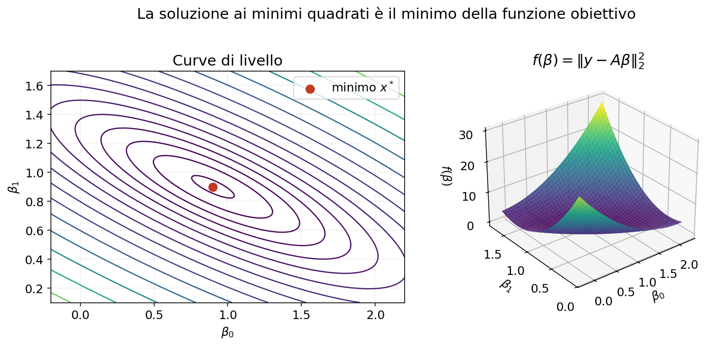

Il problema lineare dei minimi quadrati e i modelli predittivi#
I minimi quadrati permettono di trovare una soluzione approssimata quando un sistema lineare non ammette una soluzione esatta. Sono inoltre alla base della regressione lineare e di numerosi metodi di analisi dei dati.
In questo notebook introdurremo gradualmente il problema, la sua interpretazione geometrica e i principali metodi numerici per risolverlo.
Obiettivi#
Alla fine del notebook sapremo:
riconoscere un problema lineare ai minimi quadrati;
interpretare residuo e soluzione geometricamente;
derivare le equazioni normali;
risolvere il problema mediante equazioni normali e SVD;
comprendere esistenza, unicità e soluzione di norma minima;
collegare i minimi quadrati ai modelli predittivi (in particolare la regressione polinomiale)
7.1. Da dove nasce il problema?#
Consideriamo un sistema lineare
Se \(m>n\), ci sono più equazioni che incognite e il sistema si dice sovradeterminato. In presenza di dati reali, rumore o errori di misura, in generale non esiste un vettore \(x\) che soddisfi esattamente tutte le equazioni.
Non vogliamo quindi risolvere esattamente \(Ax=b\), ma trovare il vettore \(x\) per cui \(Ax\) è il più vicino possibile a \(b\).
Residuo e funzione obiettivo
Per ogni possibile vettore \(x\) definiamo il residuo
Il residuo misura la parte di \(b\) che il modello \(Ax\) non riesce a spiegare. Il problema lineare dei minimi quadrati è
Poiché
stiamo minimizzando la somma dei quadrati degli errori.
Perché si usano i quadrati?
L’uso dei quadrati ha alcune proprietà convenienti:
gli errori positivi e negativi non si cancellano;
gli errori grandi vengono penalizzati maggiormente;
la funzione obiettivo è continua e derivabile;
nel caso lineare il problema conduce a strumenti di algebra lineare efficienti.
Lo svantaggio è che un valore anomalo può avere un’influenza molto forte proprio perché il suo errore viene elevato al quadrato.
import numpy as np
import matplotlib.pyplot as plt
# Quattro equazioni e due incognite
A = np.array([[1., 0.],
[1., 1.],
[1., 2.],
[1., 3.]])
b = np.array([1., 2., 2., 4.])
x_star, residui, rango, valori_singolari = np.linalg.lstsq(A, b, rcond=None)
b_stimato = A @ x_star
r = b-b_stimato
print('Soluzione LSQ:', np.round(x_star, 4))
print('Ax*:', np.round(b_stimato, 4))
print('b: ', b)
print('Residuo b-Ax*:', np.round(r, 4))
print('Somma dei quadrati:', np.dot(r, r))
Soluzione LSQ: [0.9 0.9]
Ax*: [0.9 1.8 2.7 3.6]
b: [1. 2. 2. 4.]
Residuo b-Ax*: [ 0.1 0.2 -0.7 0.4]
Somma dei quadrati: 0.6999999999999996
7.2 Interpretazione geometrica#
Il vettore \(Ax\) è una combinazione lineare delle colonne di \(A\). Perciò, al variare di \(x\), il vettore \(Ax\) appartiene sempre allo spazio generato dalle colonne di \(A\), indicato con
Se \(b\) non appartiene a questo sottospazio, l’equazione \(Ax=b\) non ha soluzione. La soluzione ai minimi quadrati sceglie \(Ax^*\) come il punto di \(\operatorname{Im}(A)\) più vicino a \(b\).
Quindi \(Ax^*\) è la proiezione ortogonale di \(b\) sullo spazio delle colonne di \(A\).


Ortogonalità del residuo
Nel punto più vicino, il residuo
è ortogonale a tutte le colonne di \(A\). Pertanto
Sostituendo \(r^*=b-Ax^*\) si ottiene
print('A^T r =', np.round(A.T @ r, 12))
print('||A^T r||_2 =', np.linalg.norm(A.T @ r))
# La matrice di proiezione sullo spazio delle colonne di A
P = A @ np.linalg.solve(A.T @ A, A.T)
print('||Pb-Ax*||_2 =', np.linalg.norm(P @ b-b_stimato))
print('||P^2-P||_2 =', np.linalg.norm(P @ P-P))
A^T r = [0. 0.]
||A^T r||_2 = 3.820199830714189e-15
||Pb-Ax*||_2 = 1.4217791915866692e-15
||P^2-P||_2 = 2.785946459622037e-16
Esistenza e unicità
Il problema lineare ai minimi quadrati ammette sempre almeno una soluzione. L’unicità dipende dal rango di \(A\):
se \(\operatorname{rank}(A)=n\), le colonne sono linearmente indipendenti e la soluzione è unica;
se \(\operatorname{rank}(A)<n\), esistono infinite soluzioni che producono lo stesso vettore \(Ax^*\) e lo stesso residuo minimo.
Nel secondo caso è possibile scegliere, tra tutte le soluzioni, quella con norma euclidea minima.
7.3 Equazioni normali#
La stessa condizione può essere ottenuta minimizzando la funzione
Sviluppando il prodotto scalare:
Il gradiente è
La matrice Hessiana è \(\nabla^2f(x)=2A^TA\) ed è semidefinita positiva. La funzione è quindi convessa: ogni punto che annulla il gradiente è un minimo globale. Se \(A\) ha rango massimo per colonne, l’Hessiana è definita positiva e il minimo è unico.
Imponendo \(\nabla f(x)=0\) otteniamo il sistema delle equazioni normali:
La figura seguente mostra la funzione obiettivo per il primo esempio. Le curve di livello sono ellissi concentriche e il loro centro coincide con la soluzione \(x^*\).



La matrice \(A^TA\) è sempre simmetrica e semidefinita positiva, perché
Se \(A\) ha rango massimo per colonne, allora \(A^TA\) è definita positiva e invertibile. Le equazioni normali hanno quindi un’unica soluzione.
Poiché \(A^TA\) è simmetrica definita positiva, il sistema può essere risolto con la fattorizzazione di Cholesky
risolvendo prima \(Ly=A^Tb\) e poi \(L^Tx=y\).
# Soluzione mediante equazioni normali e Cholesky
G = A.T @ A
c = A.T @ b
L = np.linalg.cholesky(G)
y = np.linalg.solve(L, c)
x_normali = np.linalg.solve(L.T, y)
print('A^T A =\n', G)
print('Soluzione:', np.round(x_normali, 6))
print('Confronto con lstsq:', np.linalg.norm(x_normali-x_star))
A^T A =
[[ 4. 6.]
[ 6. 14.]]
Soluzione: [0.9 0.9]
Confronto con lstsq: 1.4812222630807097e-15
7.4 Soluzione mediante SVD#
Sia
la decomposizione ai valori singolari e sia \(r=\operatorname{rank}(A)\). La soluzione ai minimi quadrati di norma minima è
La formula mostra che le componenti di \(b\) lungo \(u_i\) vengono divise per il corrispondente valore singolare. Valori singolari molto piccoli possono quindi amplificare rumore ed errori numerici.
Pseudoinversa
Se
è la SVD compatta, si definisce la pseudoinversa di Moore-Penrose
La soluzione di norma minima si scrive quindi
I valori singolari nulli non vengono invertiti. In aritmetica finita si usa una tolleranza per decidere quali valori considerare numericamente nulli.
U, s, VT = np.linalg.svd(A, full_matrices=False)
tol = max(A.shape) * np.finfo(float).eps * s[0]
s_inv = np.array([1/sigma if sigma > tol else 0.0 for sigma in s])
A_piu = VT.T @ np.diag(s_inv) @ U.T
x_svd = A_piu @ b
print('Valori singolari:', np.round(s, 6))
print('Soluzione SVD:', np.round(x_svd, 6))
print('||x_SVD-x_lstsq||_2 =', np.linalg.norm(x_svd-x_star))
Valori singolari: [4.10003 1.090757]
Soluzione SVD: [0.9 0.9]
||x_SVD-x_lstsq||_2 = 2.482534153247273e-16
A_rd = np.array([[1., 1., 2.],
[2., 2., 4.],
[3., 3., 6.],
[4., 4., 8.]])
b_rd = np.array([1., 2., 2., 4.])
x_min, _, rango_rd, _ = np.linalg.lstsq(A_rd, b_rd, rcond=None)
z = np.array([1., -1., 0.]) # appartiene al nucleo di A_rd
x_altra = x_min + 3*z
print('Rango:', rango_rd)
print('||A z||_2 =', np.linalg.norm(A_rd @ z))
print('Residuo della soluzione minima:', np.linalg.norm(b_rd-A_rd @ x_min))
print('Residuo di un altra soluzione: ', np.linalg.norm(b_rd-A_rd @ x_altra))
print('Norma soluzione minima:', np.linalg.norm(x_min))
print('Norma altra soluzione: ', np.linalg.norm(x_altra))
Rango: 1
||A z||_2 = 0.0
Residuo della soluzione minima: 0.8366600265340756
Residuo di un altra soluzione: 0.836660026534075
Norma soluzione minima: 0.36742346141747667
Norma altra soluzione: 4.258520869973517
Confronto tra i metodi
Metodo |
Vantaggi |
Limiti |
|---|---|---|
Equazioni normali + Cholesky |
Semplice e rapido |
Forma \(A^TA\) e ne eleva al quadrato il condizionamento |
SVD |
Molto robusta; identifica rango e soluzione di norma minima |
Più costosa |
Riepilogo
Il problema lineare ai minimi quadrati
cerca il vettore \(Ax\) più vicino a \(b\) nello spazio generato dalle colonne di \(A\). Il residuo ottimo è ortogonale a tale spazio.
Le equazioni normali sono semplici ma possono peggiorare il condizionamento. La SVD è più robusta e permette di trattare anche matrici di rango non massimo, producendo la soluzione di norma minima.
Nell’analisi dei dati, la stessa struttura matematica permette di stimare i coefficienti della regressione lineare.